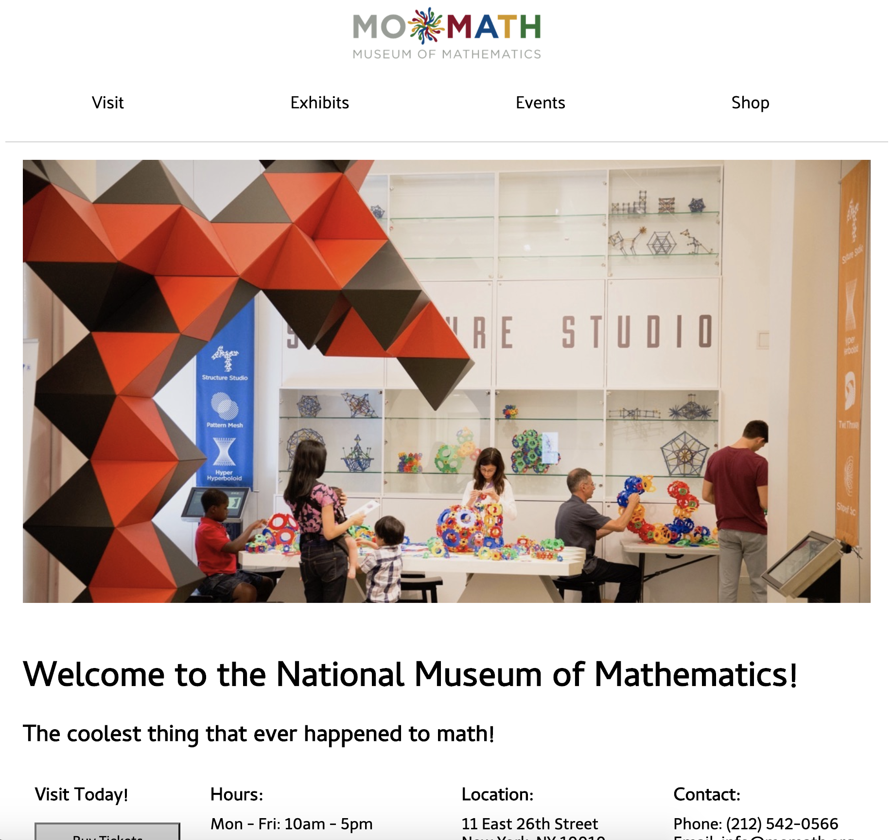
View the website redesign hereThis was made for a final project in an Intro to Web Development class at NYU Tandon in the 2018 fall semester.
For the assignment, students had to identify a problem that could benefit from better design and then build a website using HTML, CSS, and JavaScript to solve that problem. I chose to do a redesign of the Museum of Mathematics website.
Note: The actual website for the Museum of Mathematics has changed since 2018. See how it looked back when I was doing this project here.
The way the website currently looked seemed outdated for 2018. According to the Internet Archive, it has pretty much looked this way since the website was created. Having a website that hasn't been updated to the current times could potentially detract new visitors unfamiliar with the museum.
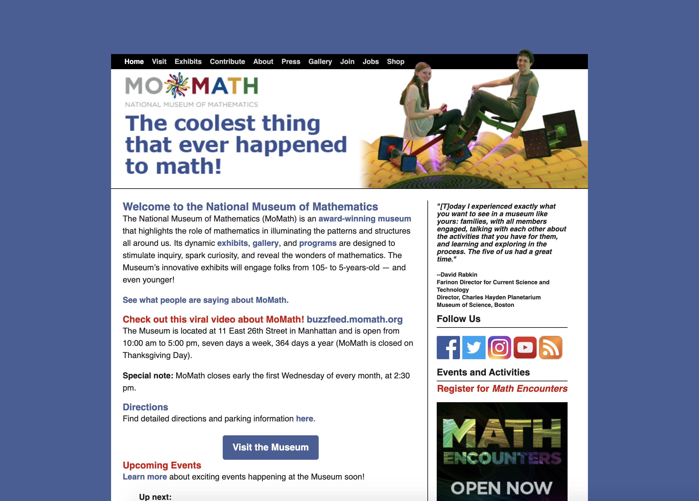
The whole museum experience is built around giving interactive exhibits for kids to play with. However, their website didn't really seem to reflect that kind of feeling. They did have printout activities available on the website, but I felt that the website could maybe improve in its interactivity on a digital level.
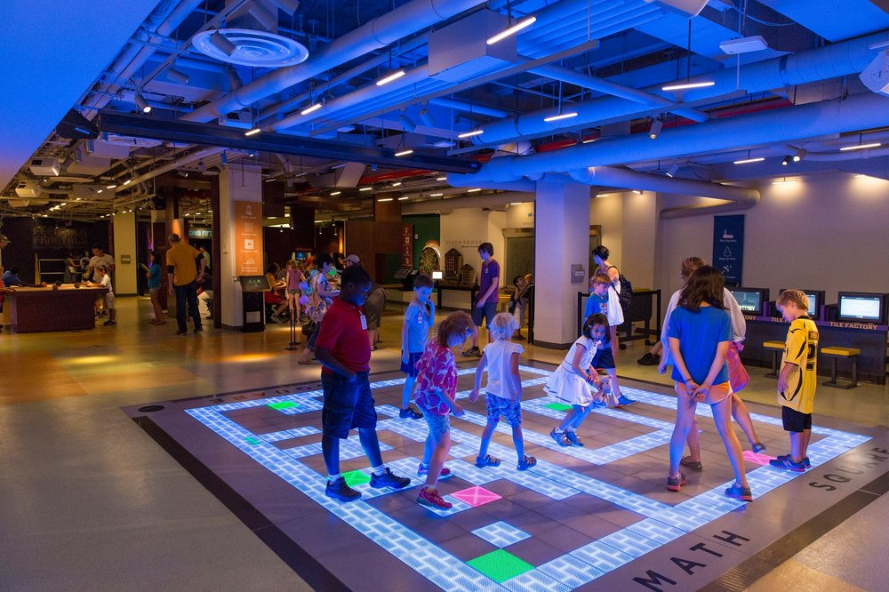
Even on just the home page, when you scroll down, there are a bunch of links to different things that might not be necessary to include all at once. Having this can make it difficult to navigate and make it feel overwhelming for a user.
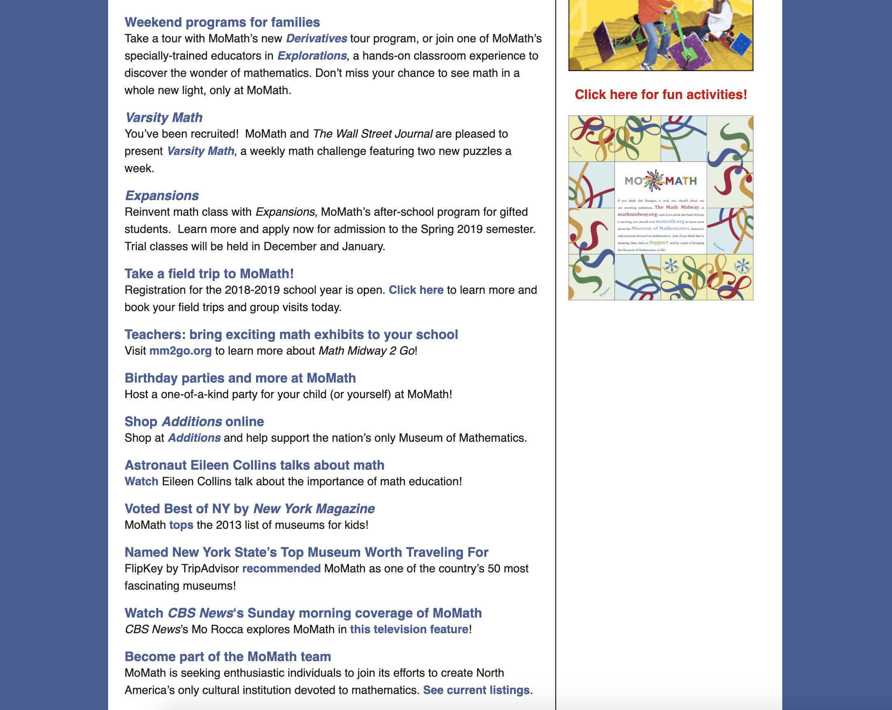
In considering how to redesign the website, I looked at how other museums in New York designed their websites. I also looked at the Museum of Mathematics's shop website, which actually had more of the modern look the main website was lacking. Since its shop already had that updated design, I decided to go more towards that direction.
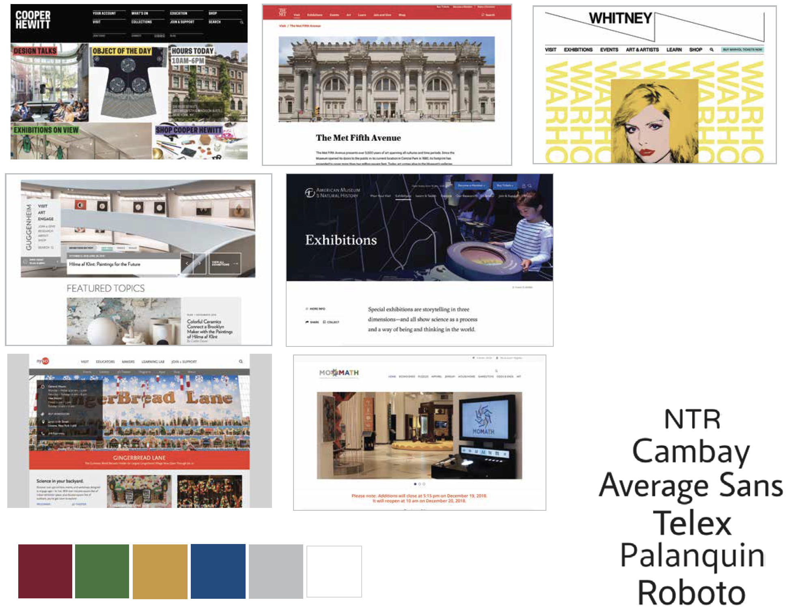
The project assignment required students to have at least three content areas. I decided to focus on four of the main pages, such as the home page, visit page, exhibitions page, and events page. The website would also include a link to the actual Museum of Mathematics's shop website.
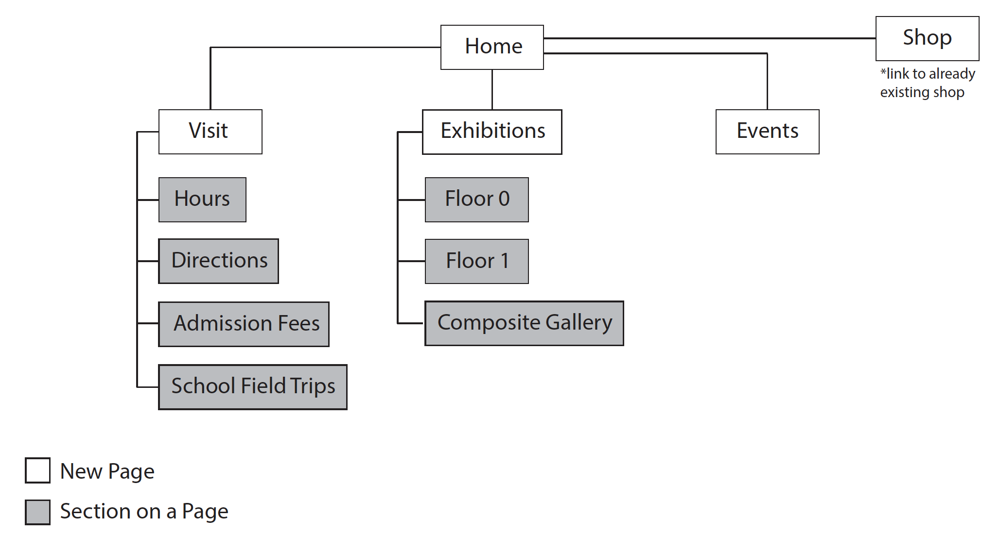
I redesigned the home page to have less text and information. I decided to just include sections that museums tend to highlight on the front page, such as the events, exhibits, and visiting.
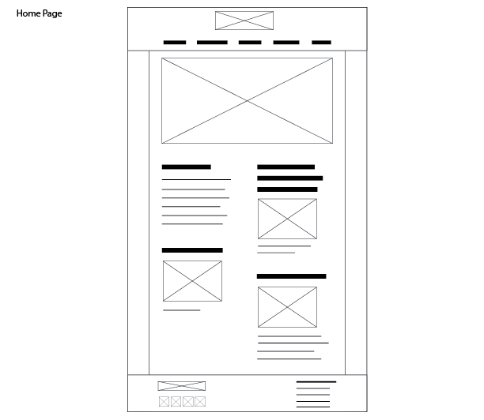
The original website had the directions to the museum and information about field trips on separate pages from the visit page. For the redesign, I decided to combine all of them into one visit page so users didn't have to go to a whole other page just to find out how to get there or how to schedule a field trip. I also included a link to where it is on Google Maps since other museums tend to do that.
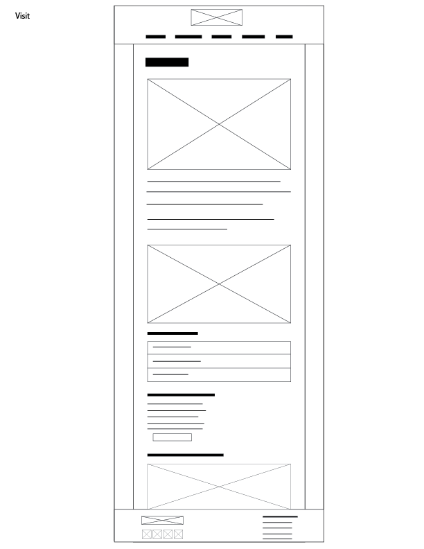
The original exhibits page seemed a little overwhelming and confusing, so I decided to redesign how the exhibit map and descriptions would be displayed to the user. This was the most notable change I made to the design so I will go into the process a bit further.
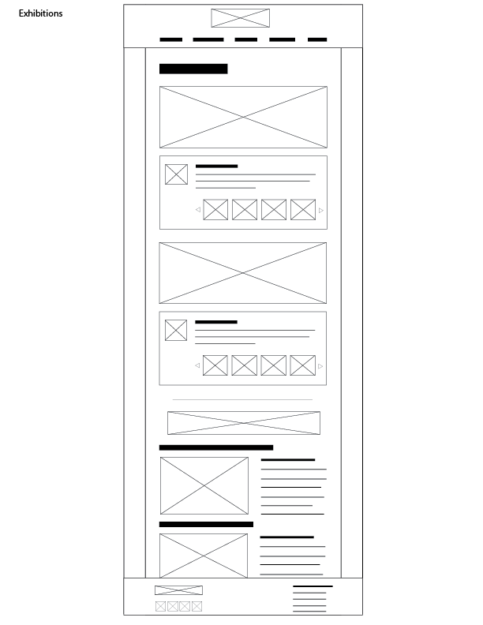
Upon interacting with the current exhibits page, I found a couple of problems with how it was designed.
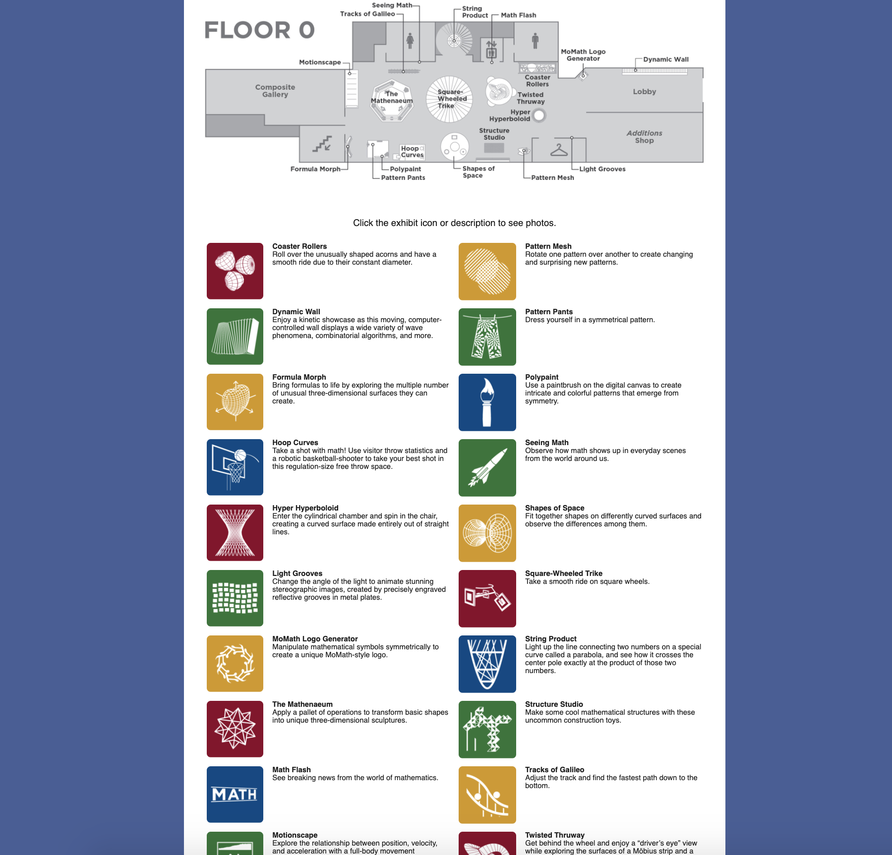
When I first saw this sentence, I thought it meant that I could click on the pictures on the gray map to reveal something. However, when I did that, it just opened up a .jpg version of that same gray map. After that, I realized that they meant that we could click on the colorful icons below the map. With the way they worded the sentence, it wasn't completely clear where to click. Should we click on the pictures above or below? I had expected something different and was slightly disappointed when it hadn't done what I thought it would.
One of the reasons why I thought that I should click on the map was that the cursor changed when I hovered over it. However, the same wasn't true for the colorful square icons. When you hovered over them, the cursor didn't change. It wasn't clear that they were actually clickable.
For Floor 0, there were 20 exhibit icons and descriptions listed out all at once. This especially makes it difficult if you wanted to know more about a particular exhibit you see on the map because you would have to scroll down and find the exhibit name among the 19 other exhibit names listed.
Taking these problems into consideration, I decided to build an interactive exhibit map. Users could click on the exhibit icons on the map and it would show them the description for just that one exhibit. That cleared up the issues of where to click and of having too much info at once. Plus, it brought a level of interactivity that the museum itself had but the website lacked.
In order to create it, I took the gray maps that they had and I recreated the little exhibit icons in Illustrator. I created two versions of each icon, a regular version and a yellow version that would be used when you hover over the icon.
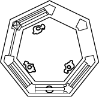 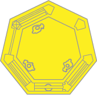
Once you click on an exhibit's icon, the corresponding description would show up in the display below the map. That way, you could learn about a specific exhibit on the map without having to scroll down and search for it.
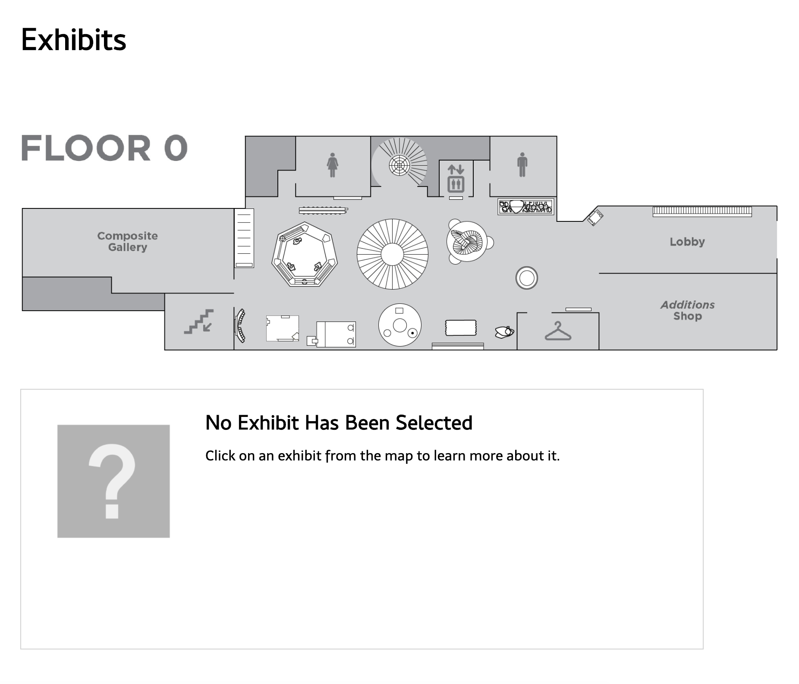 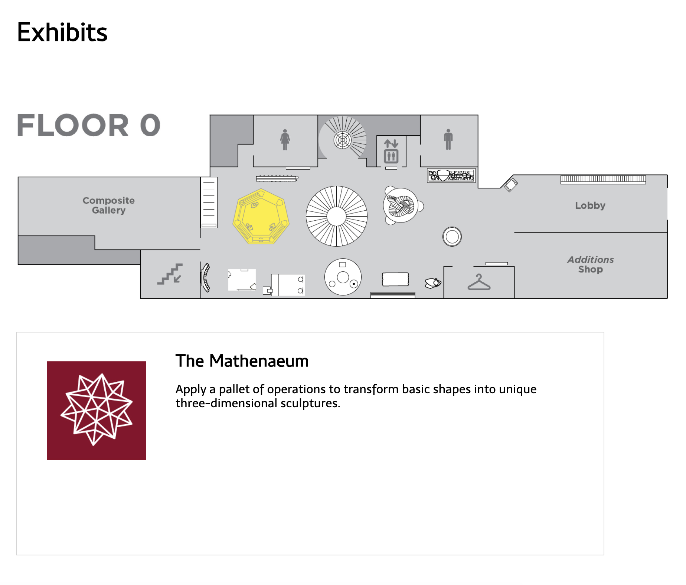
Since this project was created for a class, there was a time limit on when to submit it, which meant that I wouldn't have time to add everything I wanted to. For one thing, there are a lot of pages on the actual website and I only focused on improving four of them, so I could try to work on redesigning the whole website in a later iteration of this project. I could also improve on the exhibits page by adding the exhibit names back onto the map icons and adding images of the exhibit underneath the description like I had in my wireframe. There are several things that I could improve on, but this was a good first step in redesigning the Museum of Mathematics's website and I enjoyed coming up with ways to fix it, especially when it came to the interactive exhibit map.
View the website redesign here